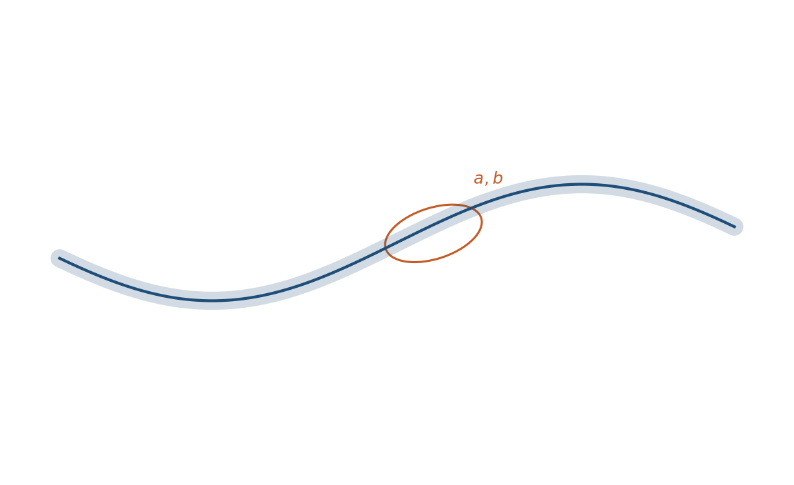
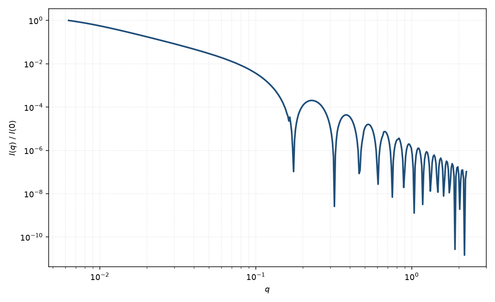

椭圆截面柔性圆柱
flexible elliptical cylinder
适用场景
蠕虫链的截面是椭圆而不是圆：在 $L$、$b$ 之外再加半轴 $a$、$b_{\mathrm{cs}}$。适用于带状胶束、压扁的半柔性纤维，以及圆截面柔性圆柱在高 $q$ 振荡深度拟合不好的数据。
链统计（线圈 / 棒转折）仍由 $L$ 与 Kuhn 长度决定；轴比只改截面因子。轴比接近 1 时退回柔性圆柱。
物理图像
解耦：$P(q)\simeq P_{\mathrm{wp}}(q;L,b)\,P_{\mathrm{cs}}^{\mathrm{(ell)}}(q)$。截面因子是椭圆盘（或无限长椭圆柱）径向振幅对截面方位的平均，与刚性椭圆圆柱的径向部分相同，但不含有限直轴的 $\mathrm{sinc}$（弯曲已在 $P_{\mathrm{wp}}$ 里）。
若持久长度短到与截面尺寸相当，解耦失败，需要更精细的短链数值模型。
示意图


核心公式
出发点
稀释链状粒子的相干散射振幅是衬度对平面波相位的体积分
$$F(\mathbf{q})=\int_V \Delta\rho(\mathbf{r})\,\mathrm{e}^{i\mathbf{q}\cdot\mathbf{r}}\,\mathrm{d}^3r.$$与圆截面柔性圆柱相同，沿轮廓 $s$ 做构象平均；差别只在截面是椭圆 $(x/a)^2+(y/b_{\mathrm{cs}})^2\le 1$。解耦后链因子与截面因子相乘，截面须对滚转角 $\psi$ 再平均。
推导
蠕虫链 $P_{\mathrm{wp}}(q;L,b)$ 与圆截面情形相同。椭圆截面映成单位圆后，径向因子仍是 $2J_1(x)/x$，有效半径
$$R_{\mathrm{eff}}(\psi)=\sqrt{a^2\cos^2\psi+b_{\mathrm{cs}}^2\sin^2\psi}.$$弯曲链不再保留直轴的 $\mathrm{sinc}$，截面粉末平均只对 $\psi$：
$$P(q)\simeq P_{\mathrm{wp}}(q;L,b)\left\langle\left[\frac{2J_1(q R_{\mathrm{eff}}(\psi))}{q R_{\mathrm{eff}}(\psi)}\right]^2\right\rangle_{\psi}.$$注意 $b$ 是 Kuhn 长度，$b_{\mathrm{cs}}$ 是截面短半轴。$a=b_{\mathrm{cs}}=R$ 回到圆截面柔性圆柱。刚性极限应改用椭圆截面直圆柱，那时才恢复轴向 $\mathrm{sinc}$ 与 $\int|F|^2\sin\alpha\,\mathrm{d}\alpha$。
低 $q$ 与渐近
链的 $R_g$ 仍由 Benoit–Doty 式用 $L$、$b$ 计算；椭圆截面附加 $(a^2+b_{\mathrm{cs}}^2)/4$。低 $q$ Guinier 由链尺寸主导，截面修正通常很小。
中间区线圈 / 棒转折与圆截面相同。高 $q$ 轴比把不同 $\psi$ 的 Bessel 零点错开，振荡比圆截面更钝。大 $q$ 尖锐界面仍 $\sim q^{-4}$。
参数表
| 参数 | 符号 | 含义 | 单位 | 典型范围 |
|---|---|---|---|---|
| 轮廓 / Kuhn 长 | $L$, $b$ | 链统计参数 | Å | 同柔性圆柱 |
| 截面半轴 | $a$, $b_{\mathrm{cs}}$ | 椭圆横截面 | Å | 5–80 Å |
| 排除体积 | — | 链自避 | — | 视分子量与浓度 |
| 标度 / 本底 | $\mathrm{scale}$, $B$ | 前置因子与本底 | 与强度单位一致 | 实验相关 |
拟合注意
截面轴比与半径多分散同样钝化高 $q$。没有带状形貌的独立证据时，优先圆截面。$L$、$b$ 的可辨识性与柔性圆柱相同，不因椭圆截面改善。
取向：溶液中构象平均已在 $P_{\mathrm{wp}}$ 内。剪切取向的带状胶束会出现二维各向异性，须加 $\theta,\phi$，不能只用粉末蠕虫链。
磁性同柔性圆柱：磁信号来自缀合颗粒或磁各向异性截面时，磁 SLD 与核通道分开。
相近模型
参考文献
- Pedersen, J. S.; Schurtenberger, P. Scattering functions of semiflexible polymers with and without excluded volume effects. Macromolecules 1996, 29, 7602–7612. DOI: 10.1021/ma9607630